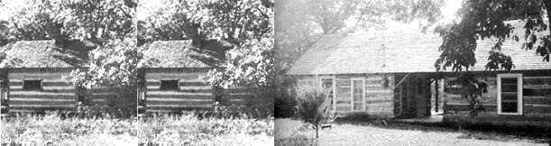

Take one rather dilapidated old log cabin on five acres in the Ozarks, add a tumbledown log barn from some miles away . . . and what do you have? Not much, according to most people . . . but a lot, according to two Canadian friends and schoolmarms.
For Carol Carter and Nicole Boursier have turned exactly those ingredients into an attractive and comfortable summer retreat. What's more, the teachers are so fond of their "new" Ozark log cabin home, that they cheerfully brave the long miles of snow and blizzard from Toronto, Ontario to Green Forest, Arkansas just to live in the snug structure during their few weeks of Christmas vacation.
It all began with the rundown log cabin-little larger than 10' X 12'-which dates back at least a hundred years and is tucked away on a secondary road midway between Green Forest and Berryville in Carroll County, Arkansas.
When the former owner and long-time resident (a retired railroad engineer) died in the early 1950's, the cabin fell into disrepair . . . the roof began to give way and a small porch on one end rotted and caved in. The original and well-seasoned oak logs in the main structure remained as solid and firm as the day they were squared and hoisted into place, however.
Carol's mother, Mrs. S.H. Carter of Green Forest, recognized the basic soundness of the building when she discovered the cabin almost hidden by weeds, and she soon approached the owner on behalf of the two teachers.
The owner was reluctant to sell. True, he placed little value on the abandoned and apparently-decaying log structure . . . but he didn't care to have his property boundaries disturbed and his extensive acreage broken by the sale of an odd five-acre block from the corner of one field. The cabin was eventually secured, however--probably through sheer enthusiasm -and the hesitant farmer later became most helpful in its restoration and remodeling.
Old log cabins and barns are fast disappearing from the Ozarks and few modern builders or carpenters will take the time-or even know how-to restore the structures. Hand-hewn roof shakes, originally rived with an iron froe and wooden mallet from white oak blocks, are now difficult to come by and it's much easier to cut the ancient timbers of a log building into stove wood than it is to repair them. If one log building is a find, then, two of the structures are a positive windfall.
Carol and Nicole were determined, though, and finally happened on a sagging log barn near Georges Creek, Arkansas. Since the owner considered the outbuilding an eyesore, she was happy to sell it for twenty dollars.
It cost another eighty dollars to have the heavy,squared oak beams dismantled and hauled to the cabin's site near Green Forest . . . but there they proved to be a real treasure for they closely matched the logs of that building. With the "new" wood, the teachers constructed a second room, joined it to the original cabin with a dog-trot or breezeway and added a wide, covered porch to give themselves ample living space by even today's spacious standards.
Pioneer parents, untroubled with claustrophobia, often kept house and raised a large family on no more than 120-square feet of floor space and an open yard swept daily with a broomsedge whisk . . . while some of today's modern ranch houses seem to sprawl over half a mountainside. Carol and Nicole's snug lodge lies somewhere between the two extremes . . . the humble but happy product of some dreams, a little money, a bit of ingenuity and a healthy respect for the traditions and resources of yesterday.
|
 |
|
|